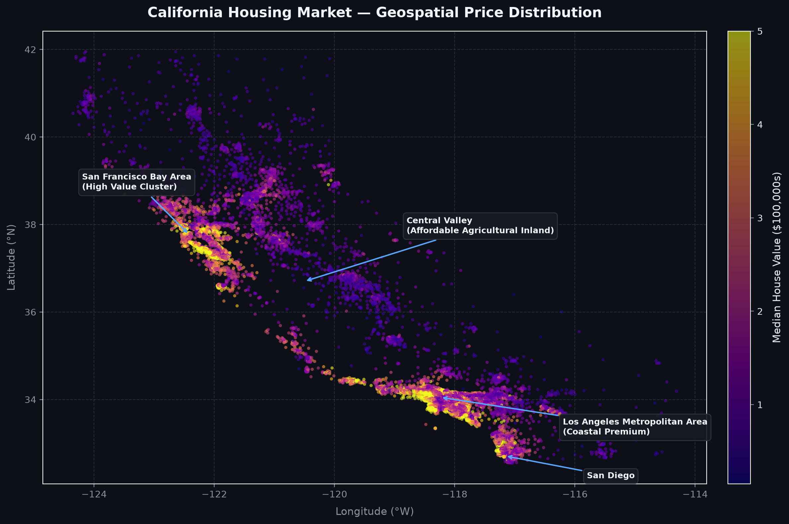
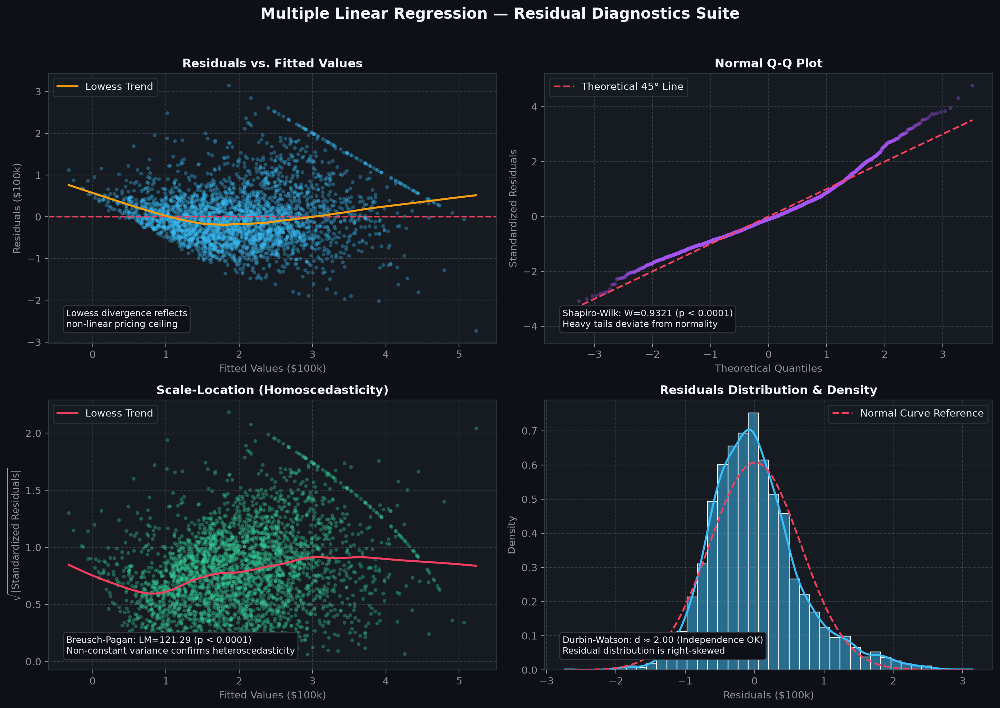

Analysis of the California housing market using 1990 census data to predict median house value across districts.
Rooms_per_Population: Rooms per personBedroom_Ratio: Bedroom ratioPeople_per_House: Occupants per houseStandardScaler for normalizationPolynomialFeatures for non-linear relationshipsSelectKBest for feature selectionLinearRegression as final modelRandomizedSearchCVGeospatial visualization of 20,640 census block groups mapping median home values across California. Distinct high-density clusters are evident along coastal metropolitan areas (San Francisco Bay Area, Los Angeles, San Diego) compared to lower-cost agricultural zones in the Central Valley.

Four-panel diagnostic analysis validating linear regression Gauss-Markov assumptions: Residuals vs Fitted (non-constant variance), Normal Q-Q plot (heavy tails rejecting normality with Shapiro-Wilk p < 0.001), Scale-Location (heteroscedasticity confirmed by Breusch-Pagan p < 0.001), and Residual Density confirming zero autocorrelation (Durbin-Watson ≈ 2.0).

You can explore all files, datasets and source code for this project: